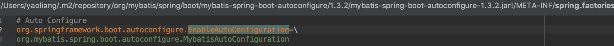

spring中可以直接使用的小功能代码
阅读，spring, springboot时能发现很多的很好的小功能点，如，加载文件、解析类的方法注解、通过class生成bean等等，本文就来整理下这些小功能
加载META-INF/spring.factory

List<String> configurations = SpringFactoriesLoader.loadFactoryNames(
EnableAutoConfiguration.class, getBeanClassLoader());
Assert.notEmpty(configurations, "No auto configuration classes found in META-INF/spring.factories. If you " + "are using a custom packaging, make sure that file is correct.");
return configurations;
加载classPath:application.yml
Properties properties = PropertiesLoaderUtils.loadProperties(new ClassPathResource("application.yml"))
String value = properties.getProperty(String key);
加载jar:file:/Users/xx/spring-xx.jar!/META-INF/spring.factories
加载jar:file:/Users/skyler/.m2/repository/org/springframework/boot/spring-boot/1.5.10.RELEASE/spring-boot-1.5.10.RELEASE.jar!/META-INF/spring.factories
把key=value,value,value转成list<value>
Properties properties = PropertiesLoaderUtils.loadProperties(new UrlResource(url));
String factoryClassNames = properties.getProperty(factoryClassName);
List<String> result = new ArrayList<String>();
result.addAll(Arrays.asList(StringUtils.commaDelimitedListToStringArray(factoryClassNames)));
通过className生成class bean
SpringFactoriesLoader class
private static <T> T instantiateFactory(String instanceClassName, Class<T> factoryClass, ClassLoader classLoader) {
try {
Class<?> instanceClass = ClassUtils.forName(instanceClassName, classLoader);
if (!factoryClass.isAssignableFrom(instanceClass)) {
throw new IllegalArgumentException(
"Class [" + instanceClassName + "] is not assignable to [" + factoryClass.getName() + "]");
}
Constructor<?> constructor = instanceClass.getDeclaredConstructor();
ReflectionUtils.makeAccessible(constructor);
return (T) constructor.newInstance();
}
catch (Throwable ex) {
throw new IllegalArgumentException("Unable to instantiate factory class: " + factoryClass.getName(), ex);
}
}
获取一个类中标有指定注解的所有方法
final List<Method> methods = new LinkedList<Method>();
ReflectionUtils.doWithMethods(aspectClass, new ReflectionUtils.MethodCallback() {
@Override
public void doWith(Method method) throws IllegalArgumentException {
// Exclude pointcuts
if (AnnotationUtils.getAnnotation(method, Pointcut.class) == null) {
methods.add(method);
}
}
});
Collections.sort(methods, METHOD_COMPARATOR);
return methods;